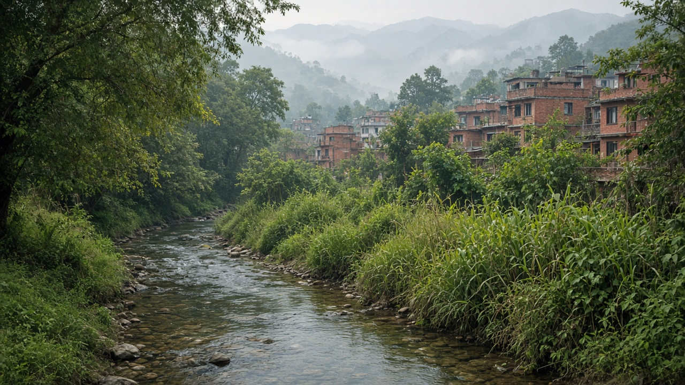
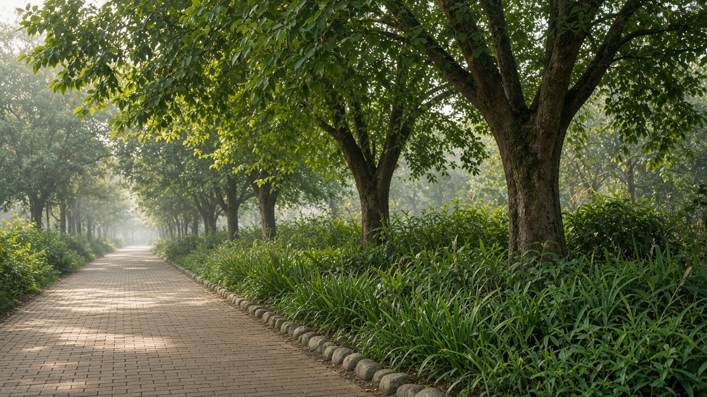
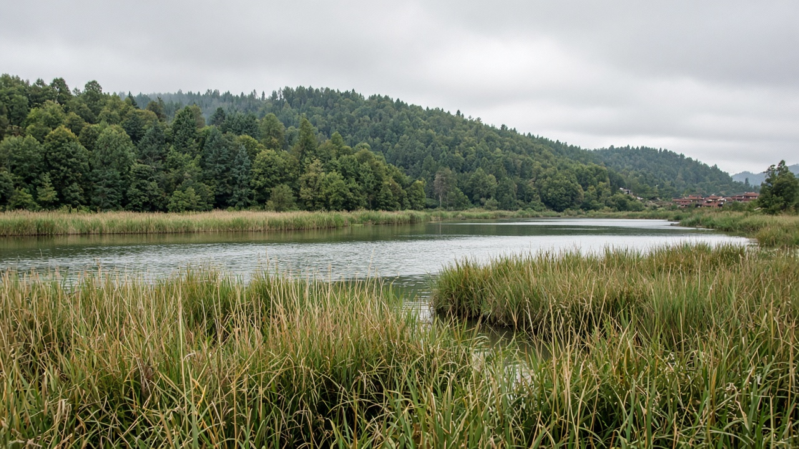

Urban Biodiversity and Blue-Green Networks
Published on August 20, 2026

Urban biodiversity is the birds, insects, fish, plants, and soil life that still inhabit streets, rivers, parks, and leftover wild edges. Blue-green networks stitch water and vegetation into continuous corridors so species can move and so people gain shade, flood storage, and daily contact with living systems. Isolated parks act as islands; connected riverbanks, street-tree lines, wetlands, and hill forests act as a city-scale habitat. In the Kathmandu Valley, remaining streams, temple groves, and forested ridges still carry birds and pollinators if they are not walled off. Pokhara’s lake, feeder wetlands, and surrounding hills form a natural backbone that planning should thicken rather than fragment with plots and parking.
Design details decide whether a corridor is habitat or only lawn. Native plants, varied heights, dead wood in safe corners, dark-sky lighting, and unchannelised stream edges support more life than ornamental hedges. Culverts should allow fish and amphibians to pass; fences should leave gaps at ground level. Invasive species and pesticide use in municipal landscaping quietly erase insects that birds need. Community stewardship of local khols, ponds, and community forests keeps networks tended between formal parks. Blue-green planning also reduces heat and peak runoff, so biodiversity policy is flood and comfort policy at the same time.
Municipalities can map remaining habitat, set no-build buffers on rivers and wetlands, and require new streets to continue tree canopy and bioswales. Emerging towns still have time to keep ridge-to-river links before they become compound walls. Success is rising native bird and plant counts, continuous canopy along walking routes, and children who can see a living stream in their ward. A blue-green city treats rivers and trees as infrastructure with ecological rights-of-way, not leftover land waiting for the next plot. Biodiversity then becomes a daily urban service, not a weekend trip outside the ring road.

सहरी जैविक विविधता चरा, कीरा, माछा, वनस्पति र माटोको जीवन हो जुन अझै सडक, नदी, पार्क र बाँकी जङ्गली किनारामा बस्छ। नीलो-हरियो सञ्जालले पानी र वनस्पतिलाई निरन्तर करिडोरमा जोड्छ ताकि प्रजाति सर्न सकून् र मानिसले छाया, बाढी भण्डारण र जीवित प्रणालीसँग दैनिक सम्पर्क पाऊन्। एक्ला पार्क टापु हुन्छन्; जोडिएका नदीकिनार, सडक रूख रेखा, सिमसार र डाँडा वन शहर-स्तरको वासस्थान बन्छन्। काठमाडौं उपत्यकामा बाँकी खोला, मन्दिर बगैंचा र वन डाँडाले चरा र परागसेवक बोक्छन् यदि पर्खालले थुनिएनन्। पोखराको ताल, सहायक सिमसार र वरपरका पहाड प्राकृतिक मेरुदण्ड हुन् जसलाई योजनाले प्लट र पार्किङले टुक्र्याउनुभन्दा बाक्लो पार्नुपर्छ।
डिजाइन विवरणले करिडोर वासस्थान हो कि केवल घाँस भन्ने तय गर्छ। स्थानीय वनस्पति, फरक उचाइ, सुरक्षित कुनामा मृत काठ, आकाश-अँध्यारो बत्ती र नकनालिइएका खोला किनारा सजावटी झाडी बारभन्दा बढी जीवन पाल्छन्। पुलियाले माछा र उभयचर जान दिनुपर्छ; बारले जमिन तहमा खाली ठाउँ छाड्नुपर्छ। आक्रामक प्रजाति र नगर बगैंचामा कीटनाशक प्रयोगले चरा चाहिने कीरा मौन मेटाउँछन्। स्थानीय खोला, पोखरी र सामुदायिक वनको सामुदायिक हेरचाहले औपचारिक पार्कबीच सञ्जाल जोगाउँछ। नीलो-हरियो योजनाले ताप र शिखर बहाव पनि घटाउँछ, त्यसैले जैविक विविधता नीति एकै साथ बाढी र आराम नीति हो।
नगरपालिकाले बाँकी वासस्थान नक्सा गर्न, नदी र सिमसारमा निर्माण-निषेध सुरक्षा दूरी राख्न र नयाँ सडकले रूख छानो र जैविक नाला निरन्तर राख्न अनिवार्य गर्न सक्छन्। उदाउँदो सहरले डाँडा-देखि-नदी कडी कम्पाउन्ड पर्खाल बन्नुअघि राख्ने समय अझै छ। सफलता बढ्दो स्थानीय चरा र वनस्पति गणना, हिँड्ने बाटोमा निरन्तर छानो र आफ्नो वडामा जीवित खोला देख्ने बालबालिका हुन्। नीलो-हरियो शहरले नदी र रूखलाई पारिस्थितिक अधिकार-मार्ग भएको पूर्वाधार मान्छ, अर्को प्लट कुर्ने बाँकी जग्गा होइन। तब जैविक विविधता दैनिक सहरी सेवा बन्छ, चक्रपथबाहिरको साप्ताहिक यात्रा होइन।

शहरी जैव विविधता पक्षी, कीट, मछली, वनस्पति और मिट्टी का जीवन है जो अभी सड़क, नदी, पार्क और बचे जंगली किनारों में बसता है। नीले-हरे नेटवर्क जल और वनस्पति को निरंतर गलियारों में जोड़ते हैं ताकि प्रजातियाँ सरक सकें और लोग छाया, बाढ़ भंडारण और जीवित प्रणालियों से दैनिक संपर्क पाएँ। अकेले पार्क द्वीप होते हैं; जुड़े नदीतट, सड़क वृक्ष रेखाएँ, आर्द्रभूमि और पहाड़ी वन शहर-स्तर का आवास बनते हैं। काठमांडू घाटी में बची नालियाँ, मंदिर उपवन और वन धार पक्षी और परागवाहक उठाते हैं यदि दीवारें उन्हें न थुनें। पोखरा का ताल, सहायक आर्द्रभूमि और आसपास की पहाड़ियाँ प्राकृतिक मेरुदंड हैं जिन्हें योजना को प्लॉट और पार्किंग से तोड़ने के बजाय मोटा करना चाहिए।
डिज़ाइन विवरण तय करते हैं कि गलियारा आवास है या केवल घास। देशी वनस्पति, भिन्न ऊँचाइयाँ, सुरक्षित कोनों में मृत काठ, आकाश-अँधेरी रोशनी और बिना नहर की नाली किनारे सजावटी झाड़ी बार से अधिक जीवन पालते हैं। पुलिया मछली और उभयचर जाने दें; बाड़ ज़मीन तल पर खाली जगह छोड़ें। आक्रामक प्रजातियाँ और नगर बागवानी में कीटनाशक प्रयोग पक्षियों को चाहिए कीट चुपचाप मिटा देते हैं। स्थानीय नालों, तालाबों और सामुदायिक वनों की सामुदायिक देखरेख औपचारिक पार्कों के बीच नेटवर्क संभालती है। नीला-हरा नियोजन ऊष्मा और शिखर बहाव भी घटाता है, इसलिए जैव विविधता नीति एक साथ बाढ़ और आराम नीति है।
नगरपालिकाएँ बचा आवास नक्शा कर सकती हैं, नदी और आर्द्रभूमि पर निर्माण-निषेध सुरक्षा दूरी रख सकती हैं और नई सड़कों से वृक्ष छत्र तथा जैविक नाले निरंतर रखने अनिवार्य कर सकती हैं। उभरते नगर धार-से-नदी कड़ियाँ कंपाउंड दीवार बनने से पहले रखने का समय अभी रखते हैं। सफलता बढ़ती देशी पक्षी और वनस्पति गिनती, चलने के मार्ग पर निरंतर छत्र और अपने वार्ड में जीवित नाला देखने वाले बच्चे हैं। नीला-हरा शहर नदियों और पेड़ों को पारिस्थितिक अधिकार-मार्ग वाली अवसंरचना मानता है, अगले प्लॉट की प्रतीक्षा करती बची ज़मीन नहीं। तब जैव विविधता दैनिक शहरी सेवा बनती है, चक्रपथ बाहर की साप्ताहिक यात्रा नहीं।